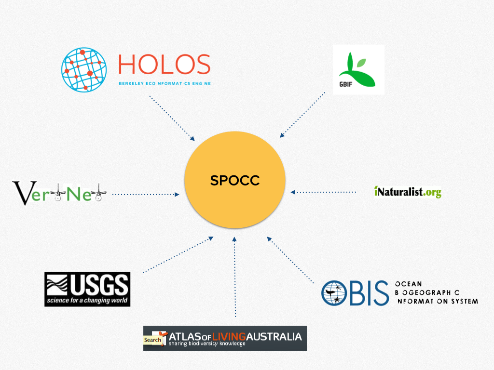
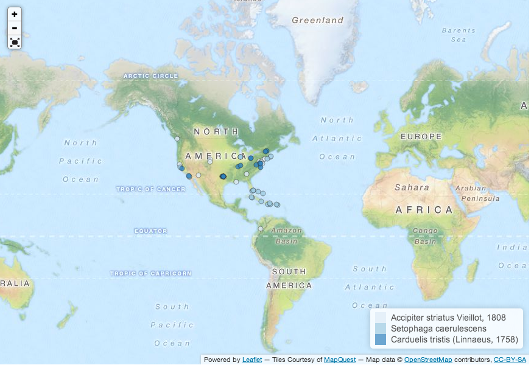
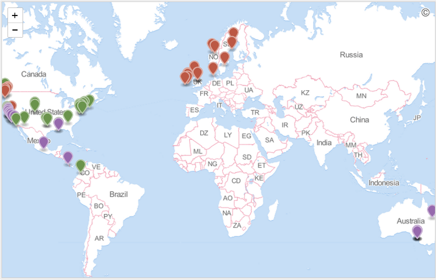
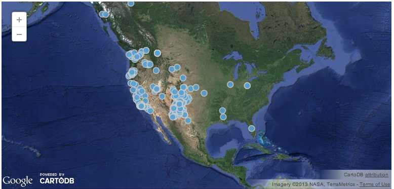
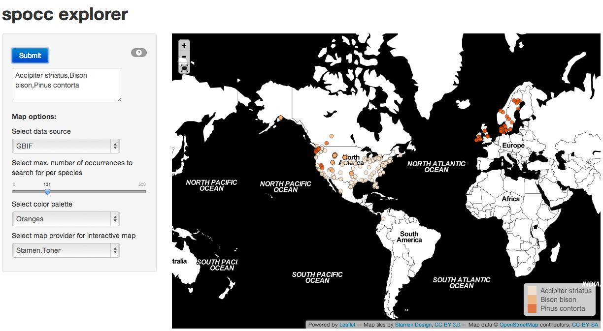
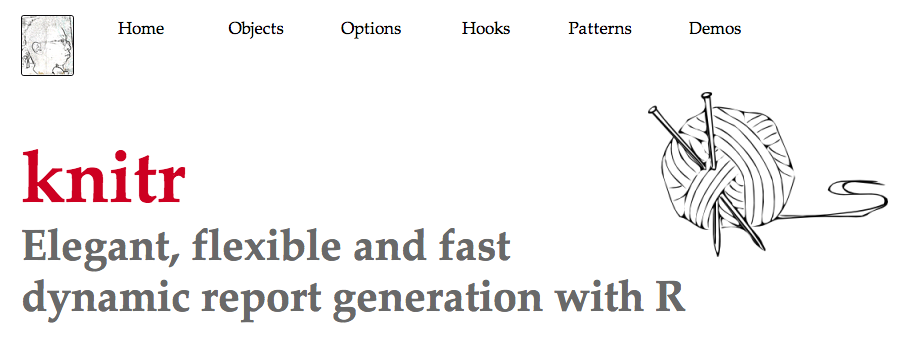

github.com/
ropensci/
workshops-montreal-2013-12
rOpenSci - Open tools for open science
Scott Chamberlain
@recology_
License: CC-BY 3.0 - You are free to copy, share, adapt, or remix, photograph, film, or broadcast, blog, live-blog, or post video of this presentation, provided that you attribute the work to its author and respect the rights and licenses associated with its components.
Science needs to be more...
to increase pace of science
& most research publicly funded - etc.
for yourself!
for others (if reproducible, more confidence in results)
Or maybe you just want science to be easier
Or maybe you just want to know how to get data
fair enough
So what tools do we need? What's missing?
The data!
picture link
Connecting scientists to open data on the web

knitr and Markdown/LaTeX - make an open science workflow
R, including knitr and Markdown/LaTeX - make an open science workflow
rOpenSci packages
| Data |
Literature
|
Hybrid
|
Unified species occurrence data - spocc
Various plotting options
| rCharts |
 | GitHub |
 | |||||
| CartoDB |
 | Shiny |
 |
knitr Markdown or LaTeX
executable papers

Xie Y (2012). knitr: A general-purpose package for dynamic report generation in R.
knitr and Markdown/LaTeX - make an open science workflow